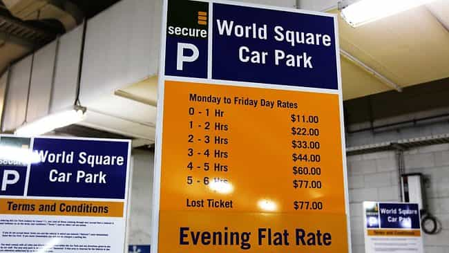
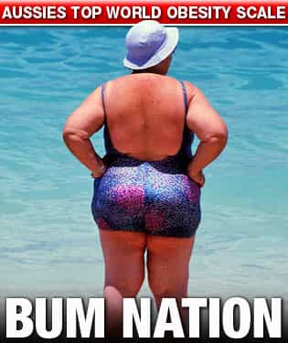

< < < Back
9 Reasons Why Sydney Sucks For Men – Return Of Kings
It has come to my attention that while many of the readers of ROK are avidly familiar with the general curse of the Western woman, their scope of experience is somewhat geographically limited. The particulars discussed on this site attribute primarily to American girls, and while Western women everywhere are simply mutations of the parent specimen, the key to success (or avoidance) is in their subtleties. One particular region of the world that is well passed the ravishing point of third wave feminism is Sydney, Australia. Being a citizen and resident of this country and city, respectively, I believe I should enlighten you with the trends and realities of this place so you can better decide when or if ever you should book a flight heading down under.
1. Sydney girls are worse than American girls
When you first interact with the average white, local girl, you will feel familiarity in the vibe you get: yes, they are entitled, bratty, not so intelligent, sluts but don’t admit it, etc. After all, Sydney is simply “Little America”. But as you continue the interaction, you will notice that the blocks and obstacles ahead of you are no longer fun “challenges” for you to “game” around. They are outright hostile manoeuvres designed to GET YOU THE FUCK AWAY.
While girls in Sydney hate beta males, manginas, and white knights just as much as those in America, they do not exhibit the same level of appreciation for masculinity either. Now do you see the problem? You are stuck in limbo: be a nice guy and she will never EVER let you near her holes, but be a typical Los Angeles alpha male that has his shit together and you will get a look of disgust that screams “How dare you objectify me and topple my pedestal of uniqueness!”
2. Girls only care about your looks
Ok, my Altaic warrior ancestry in all its testicular splendour omits me from this one, but for the average guy, this is a real pain in the gluteus maximus. If she doesn’t like you from the first second, SHE DOES NOT LIKE YOU. Any attempts to shift this momentum of thought will cause her to think, “How dare you have the audacity to talk to ME?” followed by “Only Leonardo Dicaprio is allowed to approach me”. You seriously need to be above 6′ and lift regularly to get attention here. However, on the plus side, once you are in this category you get eye fucked A LOT.
3. Girls are woefully ignorant and intellectually underdeveloped
Everyone makes fun of Americans for being stupid. Well guess what? Sydneysiders can be worse. See, the US has a large population, and so naturally the bell curve will stretch to either side more and more into the extremes. But in the case of Sydney, the entire bell curve is shifted to the left! So yes, while there are plenty of unbelievably ignorant Americans taking up the sidewalk, the average Sydneysider’s consistently annoying ignorance will drive you mad after about week.
We might not have your ‘worst’, but our entire population sits at your ‘pretty fucking bad’. This becomes a disaster when you try to display any value in Sydney because the shit you say are not only unappreciated, but are simply not understood. The rule of thumb is to say as few intellectual words as possible. Refer to below excerpt:
Man: “I am a biomedical engineer”
Sydney girl: “What’s that?”
Man: “Oh I’m from Ohio”
Sydney girl: “Where’s that?”
Man: “Let’s go to that bar, they make good sangria”
Sydney girl: “What’s that?”
Man: “Your place, Saturday night”
Sydney girl: “lol ok”
You get idea. Avoid all topics that require them to think or are not spontaneous and fun. And always, ALWAYS involve alcohol on dates.
4. Girls are xenophobic
I actually thought long and hard about putting this one up here, because I strongly believe that good game and sufficient masculinity will overcome all barriers. But in the case of Sydney, you can’t avoid it. Some girls will not fuck you if you’re black. Some girls will not fuck you if you’re not the right kind of white. Some girls will not fuck you if you’re Asian. Point is, if you’re not white, you need VERY tight game. Moreover, you need flawless physical aesthetics and strong mental constitution on top of your game. In fact, I would rate pure, aggressive masculinity as being more important than smooth game here in Sydney.
5. An epidemic of lame dudes enable the absolute worst of all females
Upon arriving to this city you will witness, perhaps for the first time in your lives, the most beta, supplicating, socially awkward, unconfident men you have ever seen, save only for the absolute pussified Norway or Sweden, and even that’s subjective. This means that the competition you face is nonexistent. However, because Sydney is such an illogical place, the lack of competition does not mean easier pussy. Having the balls to approach will NOT get you points. Instead, expect to see lots of “couples” out, where the guy is paying dearly for drinks while the girl is eye fucking you, comfortable in the fact that her beta orbiter is attending to all her emotional needs, preventing her from taking the social risk to meet a new guy. Even the nastiest, grimiest, bitchiest Sydney girl will have her choice of orbiters to guard her.
6. It’s expensive
Sydney is the second most expensive city in the world, and that’s if you include immorally expensive places like Luxembourg into the list. Club entry fees normally shoot up to $40 and beyond, while drinks from anywhere decent will cost you around $10-$20 for anything classy like a cocktail. The public transport, while putting that of the US to shame, can still be a pain as it is does not operate 24 hours. However, this isn’t the real problem. The real problem is that a 20 minute cab ride will set you back $60. And these are 2013 prices!

7. Game doesn’t work
Remember that artful neg you employed on that brunette in San Francisco that got her from initially being annoyed at you to playfully hitting your arm and asking questions? Well that wouldn’t get you very far in Sydney. If you want to know the reason why, refer to point #1, paragraph 2. Whereas the girls in the US to some degree know that you are seducing them, they will develop a sexual desire for you out of appreciation for your game. That’s not how it works in Sydney. If your interaction conveys to her any notions of you wanting to impale her mud pipe, she will call you out. Even if she is attracted to you, your actions will be seen as subterfuge. Sydney girls do not like subterfuge.
8. Grenades… grenades everywhere
There’s no two ways of saying this, but girls here are FAT. Not morbidly obese (although we do have those too) and not “documentary fat”, but just fat enough to proudly and publicly exhibit their BBW statuses while not fat enough to be rendered immobile. The consequence is that finding a decent girl ends up wasting more of your time than actually conversing with one. Clusters of these grenades also means that at times your entire field of vision will be obscured by unsightliness, causing you to lose hope in life.

9. Almost impossible to date up
While there are exceptions to any rule, Sydney mirrors Toronto in the men’s collective difficulty in dating up. It is very common to spot women that are ugly, fat—or both ugly and fat—dating guys that, at least on the exterior, look like they have quite a bit going for them. Conversely, it’s not common at all to spot plain looking guys with gorgeous women. This discrepancy is especially pronounced in the fitness realm. Most men in this city have a gym membership, and regardless of how they look or how tall they are genetically, their effort screams out the admirable virtue of self improvement. The same can most certainly not be said for the females in a city where carrying easily preventable fat is the norm.
Final Note
I cannot speak for all of Australia as I have not gamed extensively in other cities, but I would presume they are significantly better than Sydney. However, I recommend that everyone pay Sydney at least one gaming visit if simply for a self-training session. If you can conquer Sydney, the world is yours.
Read Next: The 5 Easiest Clubs In The World To Get Laid


{kind=link}
{kind=link}